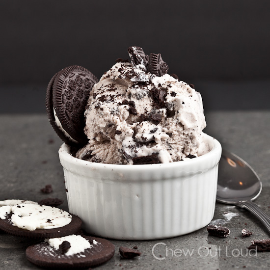
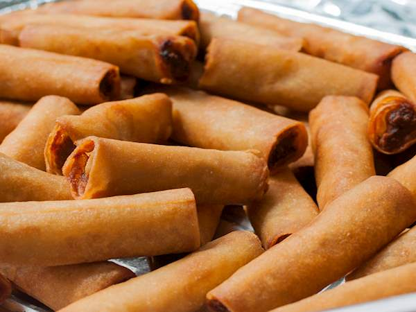
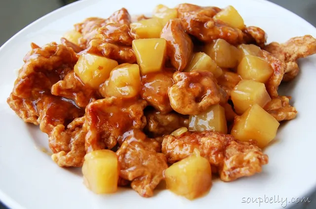
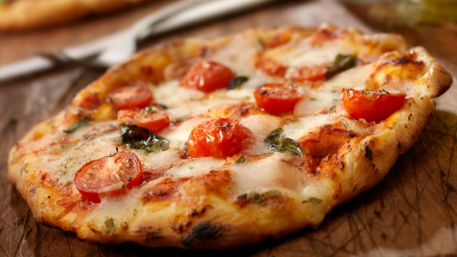

My Favorite Foods
Lasagna

Lasagne (US: /ləˈzɑːnjə/, also UK: /ləˈzænjə/,[1] Italian: [laˈzaɲɲe]; singular lasagna, Italian: [laˈzaɲɲa]) are a type of pasta, possibly one of the oldest types, made of very wide, flat sheets.
Ice Cream
a sweet flavored frozen food containing cream or butterfat and usually eggs.
Shanghai
Shanghai cuisine, also known as Hu cuisine, is a popular style of Chinese food. In a narrow sense, Shanghai cuisine refers only to what is traditionally called Benbang cuisine which originated in Shanghai.
Fried Chicken

Fried chicken, also known as Southern fried chicken, is a dish consisting of chicken pieces that have been coated with seasoned flour or batter and pan-fried, deep fried, pressure fried, or air fried.
Pineapple Chicken
Image result for pineapple chicken definition The basis of this dish is chicken thighs, pineapple and red bell peppers. These ingredients are sauteed to golden brown, then flavored with garlic and ginger and tossed in a sweet and savory sauce.
Pizza
a dish made typically of flattened bread dough spread with a savory mixture usually including tomatoes and cheese and often other toppings and baked.